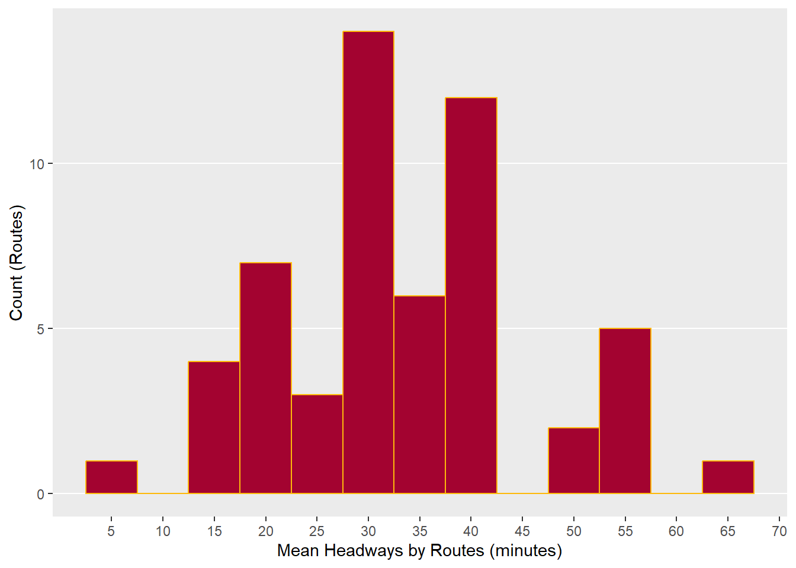
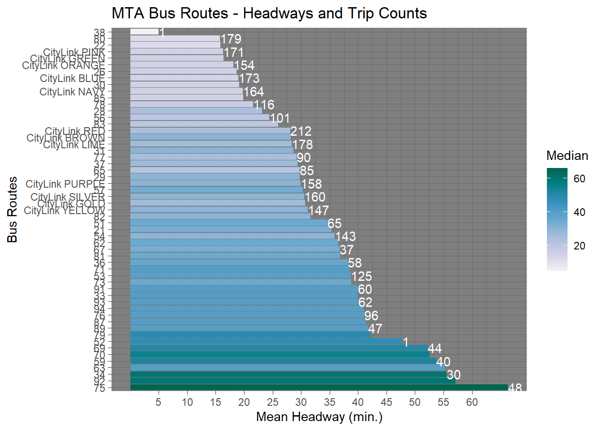

Calculating Headways
library(gtfstools)
library(dplyr)
library(ggplot2)Why calculate headways?
Agencies publish loads of info about their services using GTFS, as we observed when cleaning our data. Some agencies publish optional information, such as frequencies.txt. This file provides information about how often a service runs. This file is used for services, such as the NYC Subway, that run at fixed intervals (e.g. every 4 minutes) rather than adhering to a schedule (e.g. departures at 13:00, 13:04, etc.) This table may also provide headways - time between departures from the same stop - for scheduled service.
The MTA does not publish frequencies.txt with their GTFS, but that doesn’t mean its not useful information to have. According to the Transit Capacity and Quality of Service Manual,
“the longer the headway, the more inconvenient transit service becomes, both because passengers have to plan their trip around transit service and because they incur more unproductive time during their trip.” (Ch. 4, p. 28)
Headways greater than 10 minutes typically lead passengers to invest more time into their journeys to account for less-frequent service. Beyond 15 minutes, passengers must adapt to increasingly less-convenient departure and arrival times for their journeys. Headways upwards of 60 minutes provide “minimal” and “undesirable” service from a passenger’s point of view.
Headways as a proxy for quality of service can be used to compare service across agencies.
All this is just to reiterate - headways are a useful thing to have. A GTFS gives us all the information we need to calculate this measure, starting with trip_ids.
From Trips to Patterns
In GTFS, trips are the most fine-grained keys in the data. A trip in GTFS corresponds to one bus travelling from its origin to its destination following a specific sequence of stops, in a single direction (inbound/outbound). A trip_id is generated for each scheduled trip for one week of service.
#13k or so trips in this gtfs
length(unique(gtfs_fil$trips$trip_id))[1] 13246Trips are aggregated up to routes, which are sets of trips that serve roughly the same stops in the same sequence, inbound and outbound -- but origins, destinations, and stops served may vary. Routes may contain trips that have particular services depending on the time of day. Stops may be skipped during rush hour, or additional stops may be served to feed rail services.
An intermediate unit can be assigned by gtfstools: a pattern. Patterns group together trips that follow the same sequence of stops. There are far fewer patterns than there are trips, but more patterns than routes.
patterns <- get_stop_times_patterns(gtfs_fil)
length(unique(patterns$pattern_id))[1] 287#resolution somewhere between trip_id and route_idEach pattern_id is associated with a different number of trips.
count(patterns, pattern_id) pattern_id n
1: 1 112
2: 2 112
3: 3 169
4: 4 170
5: 5 126
---
283: 283 1
284: 284 1
285: 285 1
286: 286 1
287: 287 1Looking at the start and end of this table, we have patterns that are associated with a single trip, or patterns that are associated with over 100 trips. We will use pattern_id as a grouping variable when we calculate headways.
Most of our cleaning operations were performed globally, but here the first step is to break out the GTFS stop_times table to which we will join the patterns table we created earlier. stop_times is the most fine-grained table in the GTFS; it reports where and in what sequence each trip_id stops along its journey. When we will add to this table pattern IDs as well as route_short_names for grouping and stats we can use later.
##in the first line we are linking patterns to stop_times via trip_id
stop_times_patt <- left_join(gtfs_fil_m_f$stop_times, patterns, by="trip_id")%>%
##then we pipe the joined table to another join, route_id via trip_id
left_join(gtfs_fil_m_f$trips[ , c("trip_id", "route_id")], by = "trip_id", keep = FALSE)%>%
##then we pipe it one more time to join route_short_name via route_id
left_join(gtfs_fil_m_f$routes[ , c("route_id", "route_short_name")], by = "route_id", keep = FALSE)
names(stop_times_patt) [1] "trip_id" "arrival_time" "departure_time"
[4] "stop_id" "stop_sequence" "stop_headsign"
[7] "pickup_type" "drop_off_type" "shape_dist_traveled"
[10] "departure_time_secs" "arrival_time_secs" "pattern_id"
[13] "route_id" "route_short_name" Setting the Grouping Variables
A headway is the time between when buses arrive at the same stop. If trip_1 of Route A arrives at Stop X at 15:00 and trip_2 of Route A arrives at Stop X at 15:10, Route A has a headway of 10 minutes. We know that trip_id is unique for every scheduled trip, and that route_id is agnostic when it comes to origins, destinations, and everything in between. pattern_id, as noted when we cleaned the GTFS, is a handy-middle ground.
We will use pattern_id along with stop_id as grouping variables so we can calculate headways as illustrated in my simple formulation above. After we group, we arrange by departure time; this is necessary because trip_ids are not arranged chronologically in the GTFS. As published, many trips appear to “leapfrog” each other, which can cause sequentially scheduled trips to appear further apart than they really are.
stop_times_patt_grp <- group_by(stop_times_patt, pattern_id, stop_id) %>% arrange(departure_time_secs, .by_group = TRUE)Running the Headway Calculation
We are ready to calculate headways. We subtract arrival_time_secs at each stop from arrival_time_secs of the preceding trip using lag, which respects our grouping variables.
##calculate difference in seconds between arrivals at each stop, by trip
headways <- mutate(stop_times_patt_grp, diff = arrival_time_secs-lag(arrival_time_secs)) %>%
##convert seconds to minutes
mutate(headway_m = diff/60)
range(headways$headway_m, na.rm = TRUE)[1] 0 1260To illustrate, we can filter out a single pattern and observe how we lagged the difference within pattern_id 2 of arrival_time_secs at the second sequential stop of the pattern. The first row is NA because it is the first trip of pattern_id 2; there are no preceding trips from which to calculate difference.
pat_2 <- filter(headways, pattern_id == "2", stop_sequence == 2)
head(pat_2$arrival_time_secs)[1] 14443 17323 20503 23450 26030 28010head(pat_2$diff)[1] NA 2880 3180 2947 2580 1980The TCQSM as well as Wong (2013) recommend removing headways of less than 3 minutes and greater than 90 minutes to exclude school services and breaks in service.
##subsetting using base, as dplyr::filter would get rid of NAs
headways_fil <- headways[headways$headway_m > 3 & headways$headway_m < 90,]
range(headways_fil$headway_m, na.rm = TRUE)[1] 3.033333 89.650000Plotting the distribution of bus headways
We will use our new headway variables in subsequent calculations, like stop wait times. For now, let’s plot a histogram of headways grouped by route_id.
headways_mean <- headways_fil %>% group_by(route_short_name)%>%
summarise(mean_hw = mean(headway_m))
##spit out plot
ggplot(headways_mean, aes(x=mean_hw)) +
##MTA colors
geom_histogram(binwidth = 5, color = "#FDB90B", fill = "#A30330", na.rm = TRUE) +
scale_x_continuous(name = "Mean Headways by Routes (minutes)", breaks=seq(5,90,5))+
ylab("Count (Routes)") +
theme(panel.grid.minor.y = element_blank(),
panel.grid.major.x = element_blank(),
panel.grid.minor.x = element_blank())
Plotting Headways and Trip Count by Route
While it’s neat to have a distribution of headways, showing that most routes are hanging around 40 minutes, why don’t we get a sense of what mean headway is for each route? While we’re doing that, why don’t we get some other stats? One thing that might be particularly interesting is how many trips run on each route per day. We have can see there’s some outliers on this histogram - do those routes make very many trips? Let’s see.
headways_rt <- group_by(headways_fil, route_short_name) %>% #group based on route name
summarise(mean = mean(headway_m), #calculate mean headway of each route
median = median(headway_m), #get the medians to catch anything skew
count = length(unique(trip_id)) #get a count of how many trips run on each route
)%>% arrange(mean)
ggplot(na.omit(headways_rt), aes(x = reorder(route_short_name, -mean), y = mean, label = count))+
geom_col(aes(fill = median)) +
coord_flip() +
geom_text(check_overlap = TRUE, color = "white", position = position_dodge(0.9), hjust = 0) +
scale_fill_distiller(palette = "PuBuGn", direction = 1, name = "Median") +
xlab("Bus Routes") +
scale_y_continuous(name = "Mean Headway (min.)", breaks=seq(5,60,5)) +
theme_dark() +
ggtitle("MTA Bus Routes - Headways and Trip Counts")
Now this is much more informative. We can see that those two bins on either side of the histogram are made up of a single route. One of those routes, Route 38 which has 5 minute headways, actually only runs once a day. Route 52 and Route 92 only run once a day and five times a day, respectively. Next time we run this analysis, we might add those routes to the ones we purge when we clean the GTFS.